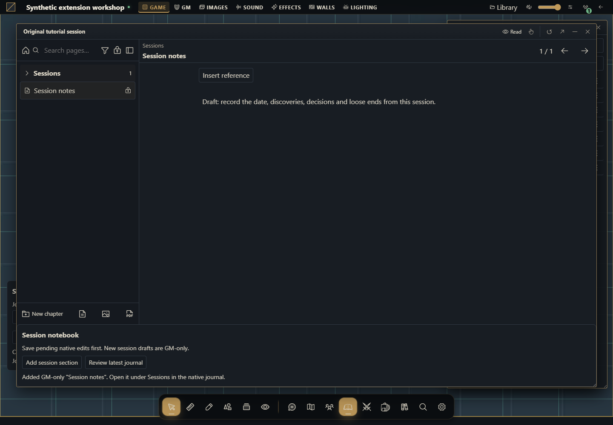

Como criar um módulo de diário
Crie, instale e execute um módulo comum que cria diários privados e acrescenta rascunhos de sessão persistentes.


O que você vai construir
Um módulo comum para Gravewright 0.3.0 com duas ações reais: criar um diário privado a partir da mesa e acrescentar uma página de rascunho a um diário já existente. O botão da ficha é Adicionar seção de sessão. Ele grava uma página chamada Session notes, no capítulo Sessions, com texto original e público gm. O texto das páginas já existentes não é traduzido nem substituído.
O exemplo usa as APIs públicas api.journals.state, create e update; não importa código privado do host, não escreve no banco diretamente e não precisa de aplicativo Django. O módulo preserva o editor nativo por meio de mode: augment.
1. Comece pelos arquivos
Use uma instalação de desenvolvimento descartável da versão 0.3.0 e uma conta proprietária para instalar. Para executar o módulo, entre em uma campanha como GM. Você precisa apenas de um editor de texto e do Python já preparado para o projeto. Não há npm, compilação nem dependências externas. Crie uma pasta session-journal dentro de data/ ou outra pasta de desenvolvimento explicitamente escolhida. Salve os cinco arquivos em UTF-8.
session-journal/
manifest.json
main.js
styles.css
messages.json
LICENSE.txt2. Entenda os tipos antes de editar
| Conceito | Valor deste exemplo | Significado |
|---|---|---|
| Tipo de pacote | módulo de navegador | Manifesto com entry, sem system/django/locales; não existe kind: journal no manifesto |
| Superfícies | table.interface e journal.sheet | Pontos de montagem do módulo |
| Tipo de documento | diary | Diário nativo; os outros tipos são quest, quest_board e roll_table |
| Tipo da página | text | A nova seção contém texto; páginas também podem ser image ou pdf |
| Público da página | gm | O rascunho não é enviado a jogadores |
Não troque o tipo do documento existente para adaptar o exemplo. Para missões ou tabelas de rolagem, use seus próprios contratos e dados. A ferramenta recusa esses tipos de forma explícita.
3. Empacote o projeto
Na pasta que contém os cinco arquivos, execute no PowerShell:
python -m json.tool manifest.json
Compress-Archive -LiteralPath manifest.json,main.js,styles.css,messages.json,LICENSE.txt -DestinationPath ../session-journal-1.0.0.zip
python -m zipfile -l ../session-journal-1.0.0.zipNo Linux/macOS:
python3 -m json.tool manifest.json
python3 -m zipfile -c ../session-journal-1.0.0.zip manifest.json main.js styles.css messages.json LICENSE.txt
python3 -m zipfile -l ../session-journal-1.0.0.zipA listagem precisa mostrar manifest.json diretamente na raiz, junto de main.js. O ZIP acima é um pacote-fonte local sem assinatura. Você também pode revisar e instalar o ZIP para download. Não envie a pasta inteira com outro nível externo.
4. Instale como proprietário e ative como GM
Como proprietário da instalação, abra Inside → Módulos → Instalar módulo → Instalar de ZIP. Na interface em inglês: Inside → Modules → Install module → Install from ZIP.
Selecione
session-journal-1.0.0.zipe clique Instalar / Install. A instalação local é a decisão de confiança do proprietário.Abra a campanha como GM. No botão Gravewright da mesa, abra Extensions e clique Activate na versão 1.0.0 de Session notebook. Instalar não ativa automaticamente na campanha.
Feche Extensions. O painel do módulo aparece no canto inferior esquerdo com campo Título do diário e botão Criar diário de sessão. Em inglês: Journal title e Create session journal.
Para modificar os arquivos depois, gere versão 1.0.1 com novo ZIP e selecione-a na campanha. Pacotes instalados são imutáveis; não edite sua pasta extraída.
O primeiro módulo explica cada tela de instalação com mais detalhes.
5. Crie e abra um diário do zero
Deixe o título padrão Session notebook e clique Criar diário de sessão uma vez. A ação envia
{title, journal_type: "diary", folder_id: null}a create, com UUID novo para essa operação.Aguarde a confirmação. Abra Journals / Diários na mesa e abra Session notebook. O host cria um diário vazio e privado na raiz do diretório.
A criação nativa não usa um campo data do módulo. É a próxima ação, na ficha aberta, que grava o rascunho. Não invente um parâmetro de conteúdo inicial em create.
Se a resposta da criação não for confirmada, confira o diretório antes de clicar outra vez: cancelamento ou perda de conexão não desfaz uma gravação que já tenha sido confirmada pelo servidor.
6. Atue no diário existente
Com o diário aberto, encontre o bloco Caderno de sessão acrescentado à ficha. O editor nativo permanece disponível.
Se estava editando, aguarde Saved / Salvo no editor nativo antes de executar a ação do módulo. A API não fornece ao módulo um comando público para salvar o rascunho local de outro editor.
Clique Adicionar seção de sessão. O módulo consulta uma projeção atual do servidor, preserva o título, visibility, content_doc, capa, páginas e documentos GM, e acrescenta uma página.
No índice nativo, abra Sessions → Session notes. O texto é:
Draft: record the date, discoveries, decisions and loose ends from this session.A página é privada do GM. Edite o rascunho pelo editor nativo. Se quiser compartilhá-lo, escolha conscientemente a opção nativa Make public e as permissões do diário. O módulo não publica nem apresenta conteúdo automaticamente.
Feche e reabra o diário para confirmar persistência. Um segundo clique, após a primeira gravação terminar, cria outra página independente com ID novo. Cliques simultâneos na mesma montagem são bloqueados.
7. Entenda a gravação e o conflito
journals.update recebe journal_id, title, visibility, a version inteira lida do servidor e o objeto data completo. Para diary, os campos são content, cover, sections e gm. Não envie a projeção inteira como data: ela usa nomes diferentes, como content_doc e cover_image. A propriedade can_edit de uma página é metadado da projeção e é retirada antes de salvar.
Este exemplo escreve somente como GM porque uma projeção de jogador é filtrada e não representa todo o documento. O código verifica context.role para desenhar os controles e também state.is_gm imediatamente antes de qualquer gravação. Mesmo assim, o servidor revalida usuário, campanha, permissão e revisão. Um jogador com permissão própria de edição continua usando o editor nativo.
Se outra janela salvar entre leitura e escrita, update retorna conflict. O módulo lê a versão atual, mantém Adicionar seção bloqueado e pede Revisar diário atual. Revise o conteúdo nativo, resolva eventuais alterações locais e só então confirme essa revisão. Não existe repetição automática nem substituição silenciosa de version. Cada novo clique aprovado é uma nova operação com UUID novo.
8. Código completo
O start carrega CSS e mensagens pelo mecanismo oficial de tradução. register declara as duas superfícies de forma síncrona. Cada montagem mantém seu próprio estado; todas as leituras e gravações recebem signal. Ao fechar a janela ou desativar, o host aborta a montagem, remove ouvintes e chama onDispose para remover o painel. A tradução do módulo cobre en, pt-BR e es; nomes e texto do rascunho original permanecem iguais nos três idiomas.
manifest.json
{
"id": "example.session-notebook",
"name": "Session notebook",
"version": "1.0.0",
"sdk": {
"requires": ">=1.0.0 <2.0.0",
"tested": "1.0.0"
},
"entry": "main.js",
"description": "Create private journals and append GM-only session drafts while preserving existing journal content.",
"author": "Gravewright documentation examples",
"license": "MIT"
}main.js
// Original tutorial. MIT. Target host: Gravewright 0.3.0, SDK 1.x.
const error = key => Object.assign(new Error(key), { tutorialKey: key });
const alive = signal => !signal.aborted;
function elements({ root, signal, onDispose, api }, kind) {
const el = (tag, text) => {
const node = root.ownerDocument.createElement(tag);
if (text !== undefined) node.textContent = text;
return node;
};
const t = (key, params) => api.i18n.t(key, params);
const panel = el('section');
panel.className = 'gw-session-tools gw-session-tools--' + kind;
const heading = el('h3', t('Session notebook'));
const status = el('p');
status.setAttribute('role', 'status');
status.setAttribute('aria-live', 'polite');
panel.append(heading);
root.append(panel);
onDispose(() => panel.remove());
const report = problem => {
if (!alive(signal)) return;
status.textContent = problem.tutorialKey ? t(problem.tutorialKey) :
t('Request failed: {code}. Review the journal before trying again.', { code: problem.code || 'unavailable' });
};
return { el, t, panel, status, report };
}
async function journalSnapshot(api, signal, journalId) {
const snapshot = await api.journals.state({}, { signal });
if (!alive(signal)) return null;
// Only the server's GM projection contains all pages, hidden blocks and GM docs.
if (snapshot.is_gm !== true) throw error('This tool requires a GM.');
const view = snapshot.journals.find(row => row.id === journalId);
if (!view || view.can_open === false) throw error('Journal is unavailable.');
if (view.type !== 'diary') throw error('This tool only edits Journal documents (diary).');
if (!view.can_edit) throw error('This journal is read-only.');
if (!Array.isArray(view.sections) || !view.content_doc || !view.cover_image ||
!view.diary?.gm?.notes || !view.diary?.gm?.secrets || !Number.isInteger(view.version)) {
throw error('The complete GM journal projection is unavailable.');
}
return view;
}
function appendPayload(view) {
if (view.sections.length >= 64) throw error('This journal already has 64 pages.');
const last = Math.max(0, ...view.sections.map(page => Number(page.sortOrder) || 0));
if (!Number.isSafeInteger(last + 10)) throw error('Page order is outside the supported range.');
const page = {
id: 'section_' + crypto.randomUUID().replaceAll('-', '').slice(0, 12),
title: 'Session notes', category: 'Sessions', kind: 'text',
assetId: '', src: '', level: 1, audience: 'gm', sortOrder: last + 10,
content: { format: 'gw-journal-doc-v1', version: 1, doc: { type: 'doc', content: [
{ type: 'paragraph', attrs: { visibility: 'public' }, content: [
{ type: 'text', text: 'Draft: record the date, discoveries, decisions and loose ends from this session.' }
] }
] } }
};
const sections = view.sections.map(({ can_edit, ...section }) => structuredClone(section));
return {
journal_id: view.id, title: view.title, visibility: view.visibility, version: view.version,
data: {
content: structuredClone(view.content_doc), cover: structuredClone(view.cover_image),
sections: [...sections, page], gm: structuredClone(view.diary.gm)
}
};
}
async function mountCreate(block) {
const { context, api, signal } = block;
if (context.role !== 'gm' || !alive(signal)) return;
const { el, t, panel, status, report } = elements(block, 'table');
const form = el('form');
const label = el('label', t('Journal title'));
const input = el('input');
input.type = 'text'; input.required = true; input.maxLength = 120;
input.value = 'Session notebook';
const create = el('button', t('Create session journal'));
create.type = 'submit';
label.append(input); form.append(label, create); panel.append(form, status);
let busy = false;
form.addEventListener('submit', async event => {
event.preventDefault();
if (busy || !alive(signal)) return;
const title = input.value.trim();
if (!title || title.length > 120) { report(error('Enter a title from 1 to 120 characters.')); return; }
busy = true; create.disabled = true; input.disabled = true;
status.textContent = t('Creating journal...');
try {
const snapshot = await api.journals.state({}, { signal });
if (!alive(signal)) return;
if (snapshot.is_gm !== true) throw error('This tool requires a GM.');
const result = await api.journals.create({ title, journal_type: 'diary', folder_id: null },
{ requestId: crypto.randomUUID(), signal });
if (!alive(signal)) return;
status.textContent = t('Created "{title}". Open it in Journals, then add a session section.', { title });
status.dataset.journalId = result.journal_id;
} catch (problem) { report(problem); }
finally { if (alive(signal)) { busy = false; create.disabled = false; input.disabled = false; } }
}, { signal });
}
async function mountAppend(block) {
const { context, api, signal } = block;
if (context.role !== 'gm' || !alive(signal)) return;
const { el, t, panel, status, report } = elements(block, 'journal');
const add = el('button', t('Add session section'));
const review = el('button', t('Review latest journal'));
add.type = review.type = 'button';
add.disabled = review.disabled = true;
const hint = el('p', t('Save pending native edits first. New session drafts are GM-only.'));
panel.append(hint, add, review, status);
let busy = false, ready = false, needsReview = false;
const controls = () => {
if (!alive(signal)) return;
add.disabled = busy || !ready || needsReview;
review.disabled = busy;
};
async function refresh() {
if (busy || !alive(signal)) return;
busy = true; ready = false; controls();
try {
const view = await journalSnapshot(api, signal, context.journalId);
if (!view || !alive(signal)) return;
ready = view.sections.length < 64;
needsReview = false;
status.textContent = t('Latest saved version: {version}. Pages: {count}.', { version: view.version, count: view.sections.length });
if (!ready) report(error('This journal already has 64 pages.'));
} catch (problem) { report(problem); }
finally { if (alive(signal)) { busy = false; controls(); } }
}
review.addEventListener('click', () => void refresh(), { signal });
add.addEventListener('click', async () => {
if (busy || !ready || needsReview || !alive(signal)) return;
busy = true; controls();
status.textContent = t('Saving session section...');
try {
const view = await journalSnapshot(api, signal, context.journalId);
if (!view || !alive(signal)) return;
const payload = appendPayload(view);
await api.journals.update(payload, { requestId: crypto.randomUUID(), signal });
if (!alive(signal)) return;
ready = payload.data.sections.length < 64;
status.textContent = t('Added GM-only "Session notes". Open it under Sessions in the native journal.');
} catch (problem) {
if (!alive(signal)) return;
needsReview = true;
if (problem.code === 'conflict') {
try {
const latest = await journalSnapshot(api, signal, context.journalId);
if (!latest || !alive(signal)) return;
ready = latest.sections.length < 64;
status.textContent = t('Conflict: server version {version} loaded. Review native content, then choose Review latest journal. No automatic retry.', { version: latest.version });
} catch (refreshProblem) { ready = false; report(refreshProblem); }
} else report(problem);
} finally { if (alive(signal)) { busy = false; controls(); } }
}, { signal });
await refresh();
}
export default {
async start({ api, assets, styles, signal }) {
styles.use('styles.css');
const messages = await assets.json('messages.json');
if (!alive(signal)) return;
api.i18n.register(messages);
},
register({ register }) {
register('table.interface', { mode: 'augment', mount: mountCreate });
register('journal.sheet', { mode: 'augment', mount: mountAppend });
},
stop() {}
};styles.css
.gw-module-root[data-module-id="example.session-notebook"] .gw-session-tools {
padding: var(--space-3, 12px); border: 1px solid var(--border);
border-radius: var(--radius-md); background: var(--surface); color: var(--text);
font-size: 14px; line-height: 1.5; pointer-events: auto;
}
.gw-module-root[data-module-id="example.session-notebook"] .gw-session-tools--table {
position: fixed; left: 16px; bottom: 128px; z-index: 10;
width: min(320px, calc(100vw - 32px)); max-height: 40vh; overflow: auto;
}
.gw-module-root[data-module-id="example.session-notebook"] .gw-session-tools h3 {
margin: 0 0 var(--space-2, 8px); font-size: 16px;
}
.gw-module-root[data-module-id="example.session-notebook"] .gw-session-tools p {
margin: var(--space-2, 8px) 0 0; font-size: 14px;
}
.gw-module-root[data-module-id="example.session-notebook"] .gw-session-tools label {
display: grid; gap: var(--space-1, 4px); margin-bottom: var(--space-2, 8px);
}
.gw-module-root[data-module-id="example.session-notebook"] .gw-session-tools input,
.gw-module-root[data-module-id="example.session-notebook"] .gw-session-tools button {
font: inherit; max-width: 100%; box-sizing: border-box;
}
.gw-module-root[data-module-id="example.session-notebook"] .gw-session-tools button {
margin-right: var(--space-2, 8px); margin-top: var(--space-2, 8px);
}
.gw-module-root[data-module-id="example.session-notebook"] .gw-session-tools input { width: 100%; }messages.json
{
"en": {
"Session notebook": "Session notebook",
"Journal title": "Journal title",
"Create session journal": "Create session journal",
"Add session section": "Add session section",
"Review latest journal": "Review latest journal",
"Save pending native edits first. New session drafts are GM-only.": "Save pending native edits first. New session drafts are GM-only.",
"This tool requires a GM.": "This tool requires a GM.",
"Journal is unavailable.": "Journal is unavailable.",
"This tool only edits Journal documents (diary).": "This tool only edits Journal documents (diary).",
"This journal is read-only.": "This journal is read-only.",
"The complete GM journal projection is unavailable.": "The complete GM journal projection is unavailable.",
"This journal already has 64 pages.": "This journal already has 64 pages.",
"Page order is outside the supported range.": "Page order is outside the supported range.",
"Enter a title from 1 to 120 characters.": "Enter a title from 1 to 120 characters.",
"Creating journal...": "Creating journal...",
"Created \"{title}\". Open it in Journals, then add a session section.": "Created \"{title}\". Open it in Journals, then add a session section.",
"Latest saved version: {version}. Pages: {count}.": "Latest saved version: {version}. Pages: {count}.",
"Saving session section...": "Saving session section...",
"Added GM-only \"Session notes\". Open it under Sessions in the native journal.": "Added GM-only \"Session notes\". Open it under Sessions in the native journal.",
"Conflict: server version {version} loaded. Review native content, then choose Review latest journal. No automatic retry.": "Conflict: server version {version} loaded. Review native content, then choose Review latest journal. No automatic retry.",
"Request failed: {code}. Review the journal before trying again.": "Request failed: {code}. Review the journal before trying again."
},
"pt-BR": {
"Session notebook": "Caderno de sessão",
"Journal title": "Título do diário",
"Create session journal": "Criar diário de sessão",
"Add session section": "Adicionar seção de sessão",
"Review latest journal": "Revisar diário atual",
"Save pending native edits first. New session drafts are GM-only.": "Salve as alterações pendentes do editor nativo antes. Novos rascunhos de sessão são privados do GM.",
"This tool requires a GM.": "Esta ferramenta exige GM.",
"Journal is unavailable.": "O diário está indisponível.",
"This tool only edits Journal documents (diary).": "Esta ferramenta só edita documentos do tipo Diário (diary).",
"This journal is read-only.": "Este diário permite apenas leitura.",
"The complete GM journal projection is unavailable.": "A projeção completa do diário para GM está indisponível.",
"This journal already has 64 pages.": "Este diário já tem 64 páginas.",
"Page order is outside the supported range.": "A ordem das páginas está fora do intervalo suportado.",
"Enter a title from 1 to 120 characters.": "Digite um título de 1 a 120 caracteres.",
"Creating journal...": "Criando diário...",
"Created \"{title}\". Open it in Journals, then add a session section.": "Diário \"{title}\" criado. Abra em Diários e adicione uma seção de sessão.",
"Latest saved version: {version}. Pages: {count}.": "Versão salva atual: {version}. Páginas: {count}.",
"Saving session section...": "Salvando seção de sessão...",
"Added GM-only \"Session notes\". Open it under Sessions in the native journal.": "Página privada \"Session notes\" adicionada. Abra em Sessions no diário nativo.",
"Conflict: server version {version} loaded. Review native content, then choose Review latest journal. No automatic retry.": "Conflito: versão {version} do servidor carregada. Revise o conteúdo nativo e escolha Revisar diário atual. Sem repetição automática.",
"Request failed: {code}. Review the journal before trying again.": "Falha na solicitação: {code}. Revise o diário antes de tentar novamente."
},
"es": {
"Session notebook": "Cuaderno de sesión",
"Journal title": "Título del diario",
"Create session journal": "Crear diario de sesión",
"Add session section": "Añadir sección de sesión",
"Review latest journal": "Revisar diario actual",
"Save pending native edits first. New session drafts are GM-only.": "Guarda primero los cambios pendientes del editor nativo. Los borradores nuevos son privados del GM.",
"This tool requires a GM.": "Esta herramienta requiere GM.",
"Journal is unavailable.": "El diario no está disponible.",
"This tool only edits Journal documents (diary).": "Esta herramienta solo edita documentos Diario (diary).",
"This journal is read-only.": "Este diario es de solo lectura.",
"The complete GM journal projection is unavailable.": "La proyección completa del diario para GM no está disponible.",
"This journal already has 64 pages.": "Este diario ya tiene 64 páginas.",
"Page order is outside the supported range.": "El orden de páginas está fuera del intervalo permitido.",
"Enter a title from 1 to 120 characters.": "Escribe un título de 1 a 120 caracteres.",
"Creating journal...": "Creando diario...",
"Created \"{title}\". Open it in Journals, then add a session section.": "Diario \"{title}\" creado. Ábrelo en Diarios y añade una sección de sesión.",
"Latest saved version: {version}. Pages: {count}.": "Versión guardada actual: {version}. Páginas: {count}.",
"Saving session section...": "Guardando sección de sesión...",
"Added GM-only \"Session notes\". Open it under Sessions in the native journal.": "Página privada \"Session notes\" añadida. Ábrela en Sessions en el diario nativo.",
"Conflict: server version {version} loaded. Review native content, then choose Review latest journal. No automatic retry.": "Conflicto: versión {version} del servidor cargada. Revisa el contenido nativo y elige Revisar diario actual. Sin repetición automática.",
"Request failed: {code}. Review the journal before trying again.": "Solicitud fallida: {code}. Revisa el diario antes de intentar otra vez."
}
}LICENSE.txt
MIT License
Copyright (c) 2026 Gravewright documentation contributors
Permission is hereby granted, free of charge, to any person obtaining a copy
of this software and associated documentation files (the "Software"), to deal
in the Software without restriction, including without limitation the rights
to use, copy, modify, merge, publish, distribute, sublicense, and/or sell copies
of the Software, and to permit persons to whom the Software is furnished to
do so, subject to the following conditions:
The above copyright notice and this permission notice shall be included in all
copies or substantial portions of the Software.
THE SOFTWARE IS PROVIDED "AS IS", WITHOUT WARRANTY OF ANY KIND, EXPRESS OR
IMPLIED, INCLUDING BUT NOT LIMITED TO THE WARRANTIES OF MERCHANTABILITY,
FITNESS FOR A PARTICULAR PURPOSE AND NONINFRINGEMENT. IN NO EVENT SHALL THE
AUTHORS OR COPYRIGHT HOLDERS BE LIABLE FOR ANY CLAIM, DAMAGES OR OTHER
LIABILITY, WHETHER IN AN ACTION OF CONTRACT, TORT OR OTHERWISE, ARISING FROM,
OUT OF OR IN CONNECTION WITH THE SOFTWARE OR THE USE OR OTHER DEALINGS IN THE
SOFTWARE.9. Valide antes de adaptar
| Cenário | Como executar | Resultado esperado |
|---|---|---|
| Gravação básica | Criar, abrir, adicionar e reabrir | Uma nova página GM com texto original persistido |
| Conteúdo existente | Diário com capa, introdução, página pública, página GM e notas/segredos | Todos permanecem iguais; só uma página é acrescentada |
| Jogador | Compartilhe o diário e abra em outra conta | Nenhum botão do módulo; rascunho GM e segredos ausentes da projeção |
| Somente leitura | Abra como leitor; revogue edição durante uma montagem | Nenhuma escrita permitida; servidor continua como limite de autorização |
| Outros tipos | Abra Quest, Quest board ou Roll table | Aviso de tipo incompatível, sem update |
| Limite | Diário com 64 páginas | Adicionar bloqueado; nenhuma página descartada |
| Conflito | Duas sessões; uma grava enquanto a outra tem requisição pendente | Releitura, botão bloqueado e revisão explícita; sem reenvio automático |
| Ciclo de vida | Abrir/fechar cinco vezes; desativar durante leitura | Um painel por janela, nenhum retorno tardio alterando DOM encerrado |
| Operação já enviada | Fechar durante update | Cancelamento não promete desfazer commit; reabrir e conferir |
Para executar os testes de comportamento do projeto do site, use node --test scripts/tutorial-journals.test.mjs. Eles executam o código do pacote com API/DOM isolados e verificam os payloads de escrita e o cancelamento; não substituem a conferência visual na mesa.
Como usar a IA para estender este módulo
Adapte example.session-notebook para Gravewright 0.3.0: [descreva uma ação de diário]. Leia frontend.json, domain-api.js, journal.sheet.context.json e os validadores de diário dessa versão. Preserve conteúdo, capa, páginas privadas, notas/segredos GM, visibility e version. Mantenha a escrita de documento completo restrita à projeção GM e o editor nativo em augment. Mostre o pacote inteiro, tradução en/pt-BR/es, passos para instalar/ativar e testes de gravação, limite de páginas, jogador, conflito e encerramento durante requisição. Não invente kind journal, não use endpoints privados e não reenvie com versão substituída.